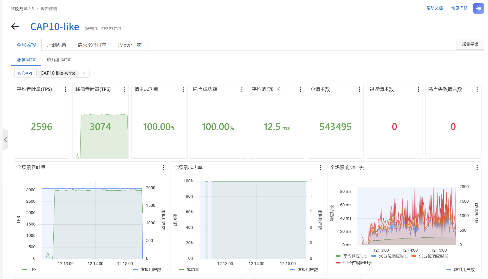
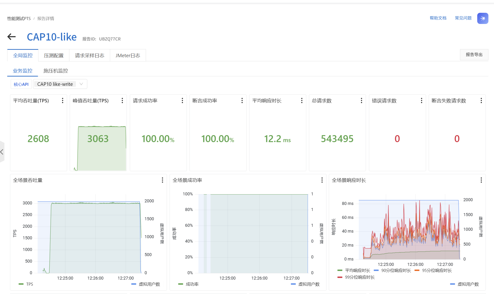

交易与履约
- Vue 用户端活动、抢券、查单
- Go / Gin校验身份和购买资格
- Redis Lua / Stream预占库存并受理
- 订单消费者 / MySQL事务内幂等成单
- 履约与补偿核销、退款和超时关闭
订单、审计和交易事件在同一事务写入。消费者依据持久结果确认消息，结果未知时进入复核。

单台 16 vCPU / 32 GiB ECS，PTS 内网发压，两轮各 180 秒。
两轮各取正式主窗的 541,499 次成功变更，除以 180 秒，得到 3008.33 QPS。下方平台概览还包含准备阶段。点击图片可放大。


在「探索附近」打开街角咖啡，体验一张到店券的购买和核销过程。
抢券请求超时可以重试。同一请求沿用原受理记录，订单只生成一次。
Go 模块化单体承接交易、社区和店铺助手。MySQL 保存订单、互动与公开规则。
订单、审计和交易事件在同一事务写入。消费者依据持久结果确认消息，结果未知时进入复核。
Feed 合并并发回源。搜索候选在返回前向 MySQL 核对公开状态和版本。
门店规则仅检索当前发布版本。订单工具按会话身份读取。